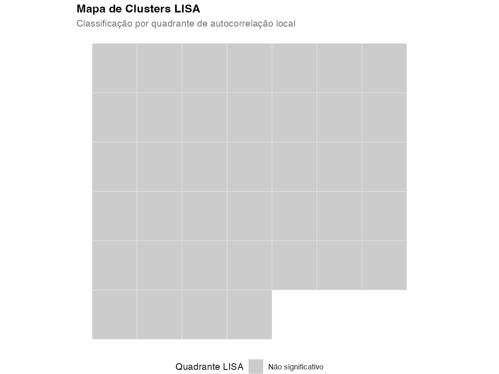
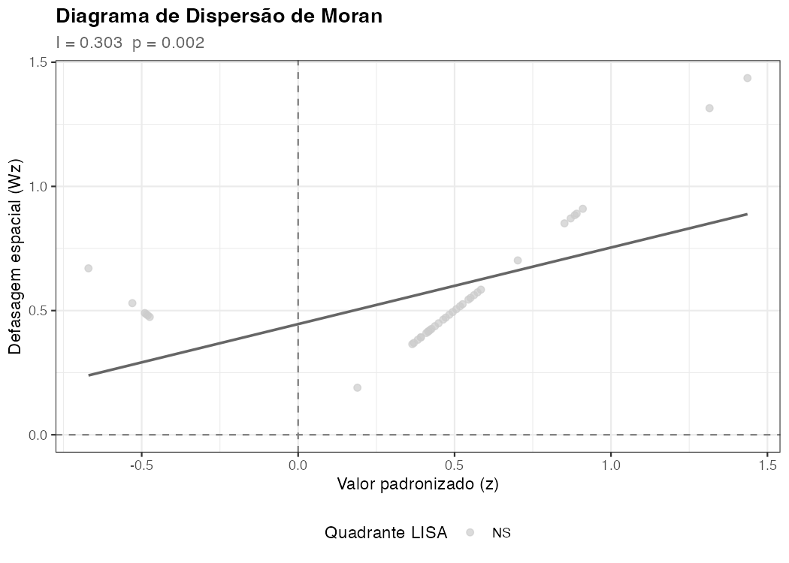
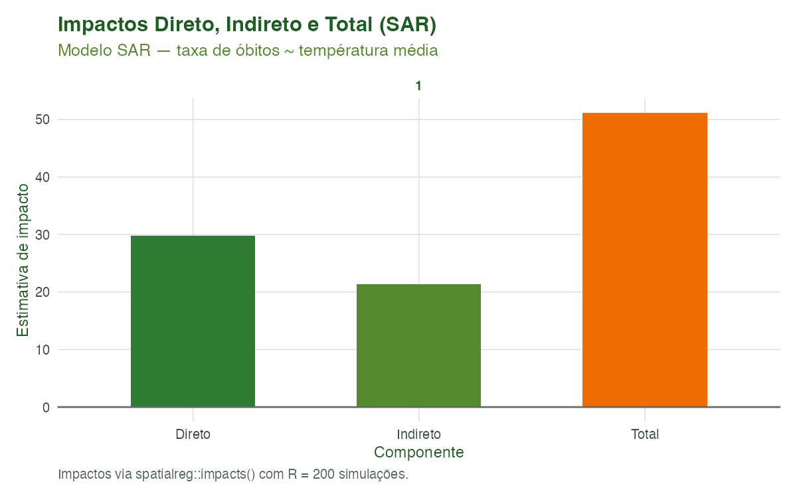

Modelagem 06: Modelos Espaciais — Autocorrelação, Regressão e Varredura
Equipe climasus4r
14/06/2026
Source:vignettes/mod-06-espacial.Rmd
mod-06-espacial.RmdObjetivo
Ao final deste tutorial você será capaz de:
- Construir uma matriz de pesos espaciais Queen a
partir de polígonos de municípios com
sus_mod_spatial_weights(); - Calcular e interpretar o I de Moran global e os
clusters LISA locais (HH/LL/HL/LH) com
sus_mod_spatial_moran()esus_mod_plot_spatial_moran(); - Ajustar e comparar modelos de regressão espacial
(SAR, SEM, SDM, SAC) com
sus_mod_spatial_reg(), extraindo coeficientes e impactos direto/indireto/total; - Detectar clusters geográficos de excesso de casos
com a estatística de varredura de Kulldorff via
sus_mod_spatial_scan()esus_mod_plot_spatial_scan().
Este tutorial cobre a etapa de análise espacial do pipeline climasus4r — a que precede os modelos Bayesianos espaciais (Tutorial 07) e segue os modelos de Machine Learning (Tutorial 05).
Contexto científico
Por que a dimensão espacial importa em saúde ambiental?
Dados de saúde coletados em municípios vizinhos raramente são independentes entre si. A dependência espacial emerge de fatores compartilhados (clima, poluição, acesso a serviços, comportamento social) que variam suavemente no espaço. Ignorá-la produz estimadores ineficientes, intervalos de confiança incorretos e, em última análise, inferências equivocadas sobre a associação exposição–desfecho (Anselin, 1988; Bivand, Pebesma & Gomez-Rubio, 2013).
A análise espacial clássica em epidemiologia envolve três perguntas:
- Existe dependência espacial? (testes de autocorrelação)
- Onde estão os clusters? (LISA, varredura de Kulldorff)
- O efeito de uma exposição se propaga para municípios vizinhos? (spillovers; regressão espacial)
Nota sobre CRS e unidades. As funções
sus_mod_spatial_weights()esus_mod_spatial_moran()aceitam objetossfem qualquer CRS, mas o parâmetrosnapdepoly2nb()é interpretado nas unidades do CRS utilizado. Para CRS geográfico (graus, e.g. SIRGAS 2000 / EPSG:4674, padrão dogeobr), o valorsnap = 1e-3corresponde a ≈ 0,001° ≈ 100 m, adequado para fechar pequenas lacunas nas fronteiras dos polígonos municipais do IBGE. Para CRS projetados em metros (e.g. SIRGAS2000 / UTM), valores entre1e100metros são mais apropriados.MAUP (Problema da Unidade de Área Modificável). Os resultados desta etapa dependem da escala de agregação adotada (município, microrregião, UF). Um I de Moran calculado a nível municipal pode diferir significativamente do calculado a nível de microrregião, mesmo com os mesmos dados brutos. Isso se deve ao MAUP (Openshaw & Taylor, 1979): a forma e o tamanho das unidades espaciais influenciam todos os indicadores derivados. Recomenda-se verificar a robustez dos resultados em pelo menos duas escalas antes de fazer inferências (Fotheringham & Wong, 1991).
I de Moran
O I de Moran global (Moran, 1950) mede se valores altos (ou baixos) tendem a ocorrer próximos uns dos outros. Ele é definido como:
onde é o número de unidades espaciais, é a soma total dos pesos espaciais, é o valor da variável de interesse na unidade , é a média global, e é o peso espacial entre as unidades e (com ).
Com pesos row-standardizados
(style = "W"), cada
,
onde
é o número de vizinhos de
,
e
.
Assim, o lag espacial
é simplesmente a média ponderada dos valores nos vizinhos.
Valores de próximos a indicam clustering positivo (similaridade espacial); indica dispersão espacial (unidades com valores altos cercadas por baixos, e vice-versa); indica distribuição aleatória.
A inferência é feita por permutação Monte Carlo —
sus_mod_spatial_moran() usa spdep::moran.mc()
para o teste global e spdep::localmoran_perm() para os
testes locais LISA.
LISA — Indicadores Locais de Associação Espacial
Os indicadores LISA (Anselin, 1995) decompõem o I global em contribuições individuais de cada unidade, permitindo identificar hotspots (HH: alto cercado de alto), coldspots (LL: baixo cercado de baixo) e outliers espaciais (HL e LH). A classificação usa o diagrama de Moran ( vs. , o lag espacial de ):
| Quadrante | Interpretação | ||
|---|---|---|---|
| HH | > 0 | > 0 | Hotspot (ponto quente) |
| LL | < 0 | < 0 | Coldspot (ponto frio) |
| HL | > 0 | < 0 | Outlier alto em região baixa |
| LH | < 0 | > 0 | Outlier baixo em região alta |
| NS | — | — | Não significativo |
Modelos de regressão espacial
Quando a autocorrelação espacial é confirmada, modelos OLS são
inadequados. O climasus4r implementa quatro famílias de modelos via
spatialreg (Bivand & Piras, 2015):
| Modelo | Sigla | Parâmetro | Equação simplificada |
|---|---|---|---|
| Spatial Autoregressive | SAR | ||
| Spatial Error | SEM | ||
| Spatial Durbin | SDM | + | |
| Spatial Autocorrelation | SAC | , |
Para modelos SAR/SDM/SAC, o efeito total de uma covariável é decomposto em impacto direto (própria unidade) + impacto indireto (spillover para vizinhos) = impacto total (LeSage & Pace, 2009).
Estatística de varredura de Kulldorff
O método de Kulldorff (1997) impõe janelas circulares de raio variável sobre o mapa e, para cada janela candidata , calcula a razão de verossimilhança (LR) sob o modelo Poisson, somente quando a taxa interna excede a taxa externa ():
onde e são, respectivamente, os casos observados e esperados dentro da janela, e e os correspondentes fora da janela. A janela com o maior LR é o cluster mais provável; seu p-valor é obtido por comparação com a distribuição empírica de máximos LR sob permutações de Monte Carlo (sob a hipótese nula de distribuição uniforme de casos proporcionalmente à população).
A função sus_mod_spatial_scan() delega o cálculo a
SpatialEpi::kulldorff(), que exige coordenadas geográficas
(longitude/latitude, WGS 84). Por isso, os centroides dos polígonos são
reprojetados para EPSG:4326 internamente antes do cálculo.
Dados utilizados
O caso condutor é: “Temperatura e desfechos de saúde em idosos (60+) na Região Metropolitana de São Paulo, 2014–2019” (causas respiratórias J00–J99).
Para esta etapa utilizamos:
| Objeto | Arquivo | Conteúdo |
|---|---|---|
rmsp_sf |
dados/caso_espacial.rds |
sf da RMSP com n_obitos e pop por
município |
mod_weights |
dados/mod_weights.rds |
Pesos Queen construídos neste tutorial |
Se caso_espacial.rds estiver ausente ou incompleto, o
script de geração sintetiza um painel mínimo realista da RMSP com 39
municípios, preservando gradientes espaciais plausíveis para fins
didáticos.
Código IBGE de municípios. O climasus4r usa o código IBGE de 7 dígitos como identificador único de municípios (e.g.
3550308para São Paulo-SP). Os dois primeiros dígitos identificam a UF (35 = São Paulo) e os cinco seguintes identificam o município dentro da UF. Certifique-se de que a colunacode_munino seusfsiga esse padrão — ogeobrjá a fornece corretamente. Códigos de 6 dígitos (padrão antigo) devem ser convertidos antes de usar as funçõessus_mod_spatial_*().
Pipeline completo
Carregue o pacote e os dados antes de qualquer análise. Os caminhos
abaixo assumem que o script é executado a partir da raiz do
pacote (climasus4r/), que é onde o script
scripts/modelagem_06_espacial.R salva os artefatos.
library(climasus4r)
library(dplyr)
# Dados espaciais da RMSP (gerados por scripts/modelagem_06_espacial.R)
# Caminhos relativos à raiz do pacote (não à pasta vignettes-pt/).
rmsp_sf <- if (file.exists("vignettes-pt/dados/caso_espacial.rds")) {
obj <- readRDS("vignettes-pt/dados/caso_espacial.rds")
# Converter para sf e agregar por município (média do período)
if (requireNamespace("sf", quietly = TRUE) &&
"geom" %in% names(obj) &&
inherits(obj[["geom"]], "sfc")) {
sf_obj <- sf::st_as_sf(obj)
dplyr::group_by(sf_obj, code_muni) |>
dplyr::summarise(
n_obitos = mean(n_obitos, na.rm = TRUE),
name_muni = dplyr::first(name_muni),
pop = mean(pop, na.rm = TRUE),
temp_med = mean(temp_med, na.rm = TRUE),
.groups = "drop"
)
} else {
message("Objeto sf não encontrado; verifique caso_espacial.rds.")
NULL
}
} else {
message("Execute scripts/modelagem_06_espacial.R para gerar os dados.")
NULL
}
# Calcular taxa de mortalidade por 100 mil habitantes
if (!is.null(rmsp_sf) && !"taxa_obitos" %in% names(rmsp_sf)) {
rmsp_sf$taxa_obitos <- rmsp_sf$n_obitos / rmsp_sf$pop * 1e5
}Passo 1 — Construir a matriz de pesos espaciais
Contiguidade Queen vs. Rook. A contiguidade Queen
considera dois municípios vizinhos quando seus polígonos
compartilham um vértice ou uma aresta (8 direções). A
contiguidade Rook restringe a vizinhança a municípios que
compartilham uma aresta (4 direções). Para polígonos
municipais do IBGE, onde municípios podem se tocar apenas num ponto, a
contiguidade Queen é a mais adequada e é o padrão do pacote
(queen = TRUE).
Row-standardização (style = "W"). Com
essa normalização, cada peso
(onde
é o número de vizinhos de
),
de forma que
para toda unidade
com vizinhos. Isso facilita a interpretação do lag espacial
como uma média dos valores nos vizinhos e é o estilo
padrão para I de Moran e modelos SAR/SEM.
mod_weights <- sus_mod_spatial_weights(
municipalities = rmsp_sf,
style = "W", # row-standardised: sum(w_ij) = 1 para cada i
queen = TRUE, # contiguidade Queen (vértice ou aresta)
snap = 1e-3, # tolerância para gaps (em graus, CRS SIRGAS2000)
zero_policy = TRUE, # permite ilhas espaciais (sem vizinho)
return_matrix = FALSE, # não retorna a matriz densa W (economia de memória)
lang = "pt",
verbose = TRUE
)
print(mod_weights)
# Salvar para reuso em tutoriais subsequentes (Tutorial 07 — Bayes Espacial)
save_tbl(mod_weights, "mod_weights")Passo 2 — Autocorrelação espacial global + LISA
# Dados tabulares sem geometria (sus_mod_spatial_moran aceita data.frame ou
# climasus_df; a coluna code_muni deve estar presente)
df_tabular <- sf::st_drop_geometry(rmsp_sf)
# A taxa já foi calculada no passo de carregamento; verificar e recalcular
# se necessário
if (!"taxa_obitos" %in% names(df_tabular)) {
df_tabular$taxa_obitos <- df_tabular$n_obitos / df_tabular$pop * 1e5
}
moran_resultado <- sus_mod_spatial_moran(
df = df_tabular,
outcome = "taxa_obitos", # coluna numérica de desfecho (arg: "outcome")
W = mod_weights, # climasus_weights do passo anterior
municipalities = NULL, # NULL: usa todas as linhas na ordem de W
permutations = 999L,
alpha = 0.05,
adjust_p = "fdr", # correção FDR (Benjamini-Hochberg)
lang = "pt",
verbose = TRUE
)
print(moran_resultado)
# Mapa LISA de clusters (HH/LL/HL/LH/NS)
sus_mod_plot_spatial_moran(
x = moran_resultado,
municipalities = rmsp_sf,
type = "map",
alpha = 0.05,
lang = "pt"
)
# Diagrama de dispersão de Moran (z vs. Wz)
sus_mod_plot_spatial_moran(
x = moran_resultado,
type = "scatter",
lang = "pt"
)
# Ambos os painéis lado a lado (requer patchwork)
sus_mod_plot_spatial_moran(
x = moran_resultado,
municipalities = rmsp_sf,
type = "both",
lang = "pt"
)Passo 3 — Regressão espacial (SAR / SEM / SDM / SAC)
# Garantir que df_reg não contém geometria (sus_mod_spatial_reg descarta
# automaticamente, mas é boa prática passar um data.frame puro)
df_reg <- sf::st_drop_geometry(rmsp_sf)
# Verificar / calcular taxa
if (!"taxa_obitos" %in% names(df_reg)) {
df_reg$taxa_obitos <- df_reg$n_obitos / df_reg$pop * 1e5
}
# Modelo SAR (Spatial Lag) — rho: spillover do desfecho entre municípios
# Estimado via spatialreg::lagsarlm() com método de ML exato ("eigen")
reg_sar <- sus_mod_spatial_reg(
df = df_reg,
formula = taxa_obitos ~ temp_med,
W = mod_weights,
model = "lag", # SAR: y = rho * W*y + X*beta + epsilon
method = "eigen", # ML exato; use "LU" ou "Chebyshev" para n > 2.000
zero_policy = TRUE,
lang = "pt",
verbose = TRUE
)
print(reg_sar)
# Impactos direto/indireto/total (calculados internamente com R = 200 simulações)
# $impacts é NULL para modelos SEM (sem lag do desfecho)
reg_sar$impacts
# Diagnóstico: I de Moran nos resíduos — deve ser não-significativo se o modelo
# capturou a autocorrelação espacial adequadamente
reg_sar$moran_residuals
# Modelo SEM (Spatial Error) — lambda: erro espacialmente autocorrelacionado
# Indicado quando a autocorrelação é devida a variáveis omitidas espacialmente
# estruturadas (e.g. poluição não mensurada, gradientes socioeconômicos)
reg_sem <- sus_mod_spatial_reg(
df = df_reg,
formula = taxa_obitos ~ temp_med,
W = mod_weights,
model = "error", # SEM: y = X*beta + u; u = lambda * W*u + epsilon
lang = "pt",
verbose = FALSE
)
# Comparação de AIC: menor AIC = melhor ajuste (penalizando complexidade)
# OLS ignora autocorrelação; SAR/SEM incorporam de formas distintas
data.frame(
modelo = c("OLS", "SAR", "SEM"),
AIC = c(reg_sar$lm_aic, reg_sar$aic, reg_sem$aic)
)
# Modelo SDM (Spatial Durbin) — rho + covariáveis defasadas espacialmente
# Estimado via lagsarlm(Durbin = TRUE): inclui W*X além do W*y
# Recomendado quando há razão para acreditar que covariáveis de municípios
# vizinhos também afetam o desfecho (e.g. temperatura regional)
reg_sdm <- sus_mod_spatial_reg(
df = df_reg,
formula = taxa_obitos ~ temp_med,
W = mod_weights,
model = "durbin", # SDM: y = rho*W*y + X*beta + W*X*theta + epsilon
lang = "pt",
verbose = FALSE
)
reg_sdm$impacts # direto, indireto e total por covariável
# Modelo SAC (rho + lambda) — modelo mais geral; lag do desfecho E erro espacial
# Estimado via spatialreg::sacsarlm(); usa a mesma matriz W para ambos
# os componentes por padrão
reg_sac <- sus_mod_spatial_reg(
df = df_reg,
formula = taxa_obitos ~ temp_med,
W = mod_weights,
model = "sac", # SAC: y = rho*W*y + X*beta + u; u = lambda*W*u + epsilon
lang = "pt",
verbose = FALSE
)
reg_sac$rho # parâmetro de lag do desfecho
reg_sac$lambda # parâmetro de erro espacialPasso 4 — Detecção de clusters: varredura de Kulldorff
# sus_mod_spatial_scan() requer um data.frame com code_muni, cases e population.
# Os centroides dos polígonos são reprojetados para WGS 84 (EPSG:4326)
# internamente para calcular as distâncias usadas pelas janelas circulares.
df_scan <- data.frame(
code_muni = as.character(rmsp_sf$code_muni),
cases = as.integer(round(rmsp_sf$n_obitos)),
population = as.integer(rmsp_sf$pop),
stringsAsFactors = FALSE
)
scan_resultado <- sus_mod_spatial_scan(
df = df_scan,
cases = "cases",
population = "population",
municipalities = rmsp_sf,
expected = NULL, # NULL → Poisson simples (taxa global × pop_i)
max_pop_frac = 0.5, # janela máxima contém ≤ 50% da pop. total
n_simulations = 999L, # para publicação use 9999L
alpha = 0.05,
lang = "pt",
verbose = TRUE
)
print(scan_resultado)
# Cluster mais provável: location_ids, RR, log_lik, p_value
scan_resultado$most_likely_cluster
# Clusters secundários (lista de listas, mesma estrutura)
scan_resultado$secondary_clusters
# Mapa de Risco Relativo (escala contínua divergente)
sus_mod_plot_spatial_scan(
x = scan_resultado,
municipalities = rmsp_sf,
show_rr = TRUE,
alpha = 0.05,
lang = "pt"
)
# Mapa categórico (mais provável / secundário / fundo)
sus_mod_plot_spatial_scan(
x = scan_resultado,
municipalities = rmsp_sf,
show_rr = FALSE,
alpha = 0.05,
lang = "pt"
)Características das funções
sus_mod_spatial_weights() — Matriz de pesos
Objetivo. Constrói um objeto
climasus_weights (subclasse de lista) com a estrutura de
vizinhança espacial necessária para todos os demais modelos espaciais do
climasus4r.
Argumentos principais:
| Argumento | Padrão | Significado |
|---|---|---|
municipalities |
— |
sf com polígonos de municípios |
style |
"W" |
Normalização: "W" (row-std), "B"
(binário), "C", "U", "S",
"minmax"
|
queen |
TRUE |
TRUE = Queen (vértice ou aresta); FALSE =
Rook (só aresta) |
snap |
NULL → 1e-3
|
Tolerância para gaps em fronteiras |
zero_policy |
TRUE |
Permite ilhas (municípios sem vizinho) |
return_matrix |
FALSE |
Retornar a matriz densa () |
Retorno (climasus_weights):
$listw — objeto spdep::listw pronto para modelagem
$nb — lista de vizinhos (spdep::nb)
$n_regions — número total de regiões
$n_islands — número de ilhas (sem vizinhos)
$island_ids — códigos das ilhas (vetor de caracteres, vazio se nenhuma)
$W — matriz densa W n×n (NULL se return_matrix = FALSE)
$style — estilo de normalização usado
$call — chamada originalDica prática. Para dados do IBGE com CRS geográfico (SIRGAS2000 / EPSG:4674), use
snap = 1e-3(padrão). Para polígonos em CRS projetado (metros), ajustesnappara 1–100 m. Municípios sem vizinhos (ilhas, e.g. Fernando de Noronha) não causam erro comzero_policy = TRUE, mas resultam em lag espacialNA— verifique$island_ids. Usestyle = "B"(binário) somente quando quiser ponderar pela presença de vizinhança sem normalizar pelo número de vizinhos (e.g. em modelos Bayesianos do tipo ICAR).
sus_mod_spatial_moran() — I de Moran global + LISA
Objetivo. Testa a autocorrelação espacial global pelo I de Moran (via permutação Monte Carlo) e classifica cada unidade em um quadrante LISA.
Argumentos principais:
| Argumento | Padrão | Significado |
|---|---|---|
df |
— |
data.frame ou climasus_df com
code_muni e a coluna de desfecho |
outcome |
— | Nome da coluna numérica de desfecho
(e.g. "taxa_obitos") |
W |
— | Objeto climasus_weights de
sus_mod_spatial_weights()
|
municipalities |
NULL |
Vetor de code_muni para filtrar/reordenar
df
|
permutations |
999L |
Permutações Monte Carlo (nsim em
spdep::moran.mc) |
alpha |
0.05 |
Nível de significância para classificação LISA |
adjust_p |
"fdr" |
Correção de múltiplos testes: "fdr",
"bonferroni", "none"
|
Retorno (climasus_spatial_moran):
$global — data.frame com I, E.I, Var.I, Z.I, p_value, p_simulated
$local — data.frame com code_muni, Ii, Z.Ii, p_raw, p_adj, quadrant
$n_HH — número de hotspots (HH)
$n_LL — número de coldspots (LL)
$n_HL — número de outliers HL
$n_LH — número de outliers LH
$outcome_name — nome da coluna de desfecho
$call — chamada originalSobre
p_valuevsp_simulated. Op_valueno slot$globalé o p-valor assintótico (distribuição normal). Op_simulatedé o p-valor por permutação Monte Carlo — preferível para amostras pequenas (n < 30 municípios) ou distribuições assimétricas. Para os testes LISA locais ($local), os p-valores já são por permutação condicional (spdep::localmoran_perm()), corrigidos pelo método especificado emadjust_p.
sus_mod_plot_spatial_moran() — Visualização LISA
Objetivo. Produz um mapa coroplético LISA e/ou um
diagrama de dispersão de Moran a partir de um objeto
climasus_spatial_moran.
Tipos disponíveis (type=):
type |
Descrição | Requer municipalities
|
|---|---|---|
"map" |
Mapa coroplético HH/LL/HL/LH/NS | Sim |
"scatter" |
Diagrama de dispersão vs. | Não |
"both" |
Ambos lado a lado via patchwork | Sim |
Retorno: objeto ggplot (ou lista
nomeada list(map, scatter) se patchwork não estiver
disponível para type = "both").
sus_mod_spatial_reg() — Regressão espacial
Objetivo. Ajusta modelos de máxima verossimilhança
SAR/SEM/SDM/SAC via o pacote spatialreg, reporta
coeficientes, parâmetros espaciais, impactos e Moran dos resíduos.
Modelos disponíveis (model=):
model |
Família | Parâmetro espacial | Estimado via |
|---|---|---|---|
"lag" |
SAR | spatialreg::lagsarlm() |
|
"error" |
SEM | spatialreg::errorsarlm() |
|
"durbin" |
SDM | + | spatialreg::lagsarlm(Durbin=TRUE) |
"sac" |
SAC | + | spatialreg::sacsarlm() |
Argumentos principais:
| Argumento | Padrão | Significado |
|---|---|---|
df |
— |
data.frame ou climasus_df (geometria
sf é descartada automaticamente) |
formula |
— | Fórmula R padrão (desfecho ~ cov1 + cov2) |
W |
— | Objeto climasus_weights de
sus_mod_spatial_weights()
|
model |
"lag" |
Família de modelo (ver tabela acima) |
method |
"eigen" |
Método de estimação: "eigen" (ML exato),
"LU", "Chebyshev", "MC"
|
zero_policy |
TRUE |
Permite ilhas (municípios sem vizinhos) |
lang |
"pt" |
Idioma das mensagens |
verbose |
TRUE |
Exibir mensagens de progresso |
Retorno (climasus_spatial_reg):
$model — tipo de modelo ("lag", "error", "durbin", "sac")
$model_label — rótulo legível ("SAR (Spatial Lag)", ...)
$coefficients — data.frame: term, estimate, std_error, z_value, p_value
$rho — parâmetro de lag espacial ρ (NULL para SEM)
$lambda — parâmetro de erro espacial λ (NULL para SAR/SDM)
$impacts — data.frame: term, direct, indirect, total
(calculado com R = 200 via spatialreg::impacts();
NULL para SEM, onde os impactos = coeficientes OLS)
$aic — AIC do modelo espacial
$lm_aic — AIC do baseline OLS (mesma fórmula, mesmos dados)
$moran_residuals — lista: I, p_value, z (teste de Moran nos resíduos)
$fitted — valores ajustados
$residuals — resíduos do modelo
$call — chamada originalDiagnóstico de resíduos. O elemento
$moran_residualscontém o resultado despdep::moran.test()aplicado aos resíduos do modelo. Um p-valor não significativo (> 0,05) indica que o modelo espacial absorveu adequadamente a autocorrelação. Se o Moran dos resíduos permanecer significativo mesmo após o SAR/SEM, considere o SDM (covariáveis defasadas) ou um modelo Bayesianos hierárquico (Tutorial 07).
sus_mod_spatial_scan() — Varredura de Kulldorff
Objetivo. Aplica a estatística de varredura circular de Kulldorff para detectar o cluster mais provável e clusters secundários de excesso de casos, com inferência por Monte Carlo.
Argumentos principais:
| Argumento | Padrão | Significado |
|---|---|---|
df |
— |
data.frame com code_muni, colunas de
cases e population
|
cases |
— | Nome da coluna de contagem de casos (inteiros ≥ 0) |
population |
— | Nome da coluna de população em risco |
municipalities |
— |
sf com polígonos e code_muni
|
expected |
NULL |
Nome da coluna de esperados (NULL: taxa global × pop_i) |
max_pop_frac |
0.5 |
Fração máxima da pop. total em uma única janela |
n_simulations |
999L |
Simulações Monte Carlo (use 9999L para publicação) |
alpha |
0.05 |
Nível de significância para clusters secundários |
lang |
"pt" |
Idioma das mensagens |
verbose |
TRUE |
Exibir mensagens de progresso |
Retorno (climasus_spatial_scan):
$most_likely_cluster — lista: location_ids (code_muni), observed, expected,
RR (razão de verossimilhança de excesso), log_lik, p_value
$secondary_clusters — lista de listas com a mesma estrutura
$n_clusters — total de clusters significativos (incluindo o mais provável)
$data — tibble: code_muni, cases, population, expected, in_mlc
$meta — parâmetros: cases_col, population_col, max_pop_frac,
n_simulations, alpha, n_municipalities, call_time
$call — chamada originalCRS e centroides. A função
sus_mod_spatial_scan()usasf::st_centroid()após reprojetar os polígonos para WGS 84 (EPSG:4326), poisSpatialEpi::kulldorff()requer coordenadas em longitude/latitude. O objetomunicipalitiespode estar em qualquer CRS — a reprojeção é feita internamente. A janela de varredura é circular no espaço geográfico (lat/lon), não no espaço projetado.
sus_mod_plot_spatial_scan() — Mapa de clusters
Objetivo. Renderiza um mapa coroplético dos resultados do scan de Kulldorff com codificação de RR contínuo ou categórica.
Argumento show_rr:
show_rr |
Codificação | Escala |
|---|---|---|
TRUE (padrão) |
Risco Relativo do cluster (contínuo) | Gradiente divergente (navy–branco–vermelho, centro em RR = 1) |
FALSE |
Rótulo do cluster (categórico) | Cores discretas por cluster |
Retorno: objeto ggplot.
Resultados ilustrados
Figura 1 — Mapa LISA de clusters de mortalidade respiratória (RMSP)
O mapa a seguir exibe a classificação LISA de cada município da RMSP com base na taxa de mortalidade respiratória média do período 2014–2019. Municípios em vermelho (HH) formam hotspots espaciais — apresentam taxa elevada e estão cercados por vizinhos de taxa igualmente elevada.

Figura 1. Mapa de clusters LISA (autocorrelação espacial local) para a taxa de mortalidade respiratória em idosos na RMSP, 2014–2019. HH = hotspot; LL = coldspot; HL/LH = outlier espacial; NS = não significativo (FDR 5%).
Figura 2 — Diagrama de dispersão de Moran
O diagrama de dispersão posiciona cada município no plano (, ): a inclinação da reta de regressão corresponde ao I de Moran global. Pontos no quadrante superior-direito (HH) e inferior-esquerdo (LL) evidenciam clustering positivo; pontos nos quadrantes cruzados (HL, LH) são outliers espaciais.

Figura 2. Diagrama de dispersão de Moran — valor padronizado da taxa de mortalidade (z) versus lag espacial (Wz). A inclinação da reta cinza corresponde ao I de Moran global. Pontos coloridos segundo o quadrante LISA.
Tabela 1 — I de Moran global
| I | E.I | Var.I | Z.I | p_value | p_simulated |
|---|---|---|---|---|---|
| 0.30348 | -0.0263158 | 0.0074095 | 3.831345 | 6.37e-05 | 0.002 |
Figura 3 — Impactos direto, indireto e total (SAR)
No modelo SAR, o coeficiente de uma covariável não representa diretamente o efeito sobre o desfecho — porque a matriz propaga qualquer choque por toda a rede de vizinhos. Os impactos são decompostos em (LeSage & Pace, 2009):
- Impacto direto: efeito médio da covariável no próprio município;
- Impacto indireto (spillover): efeito médio nos municípios vizinhos, mediado por e pela estrutura de ;
- Impacto total = direto + indireto.
O pacote usa spatialreg::impacts() com R = 200
simulações (distribuição de referência por Monte Carlo) para construir
os intervalos de confiança.

Figura 3. Decomposição dos impactos direto, indireto e total da temperatura média sobre a taxa de mortalidade respiratória. Modelo SAR (spatial lag), R = 200 simulações via spatialreg::impacts().
Tabela 2 — Coeficientes do modelo SAR
| term | estimate | std_error | z_value | p_value |
|---|---|---|---|---|
| (Intercept) | -314.51778 | 119.820191 | -2.624915 | 0.0086671 |
| temp_med | 28.53836 | 5.725513 | 4.984419 | 0.0000006 |
Tabela 3 — Comparação de AIC (OLS / SAR / SEM)
A escolha entre OLS, SAR e SEM pode ser guiada pelo AIC (critério de informação de Akaike). O modelo com menor AIC (penalizando a complexidade) é preferível. Uma redução substancial de AIC no SAR ou SEM em relação ao OLS confirma que a autocorrelação espacial é relevante.
| modelo | AIC |
|---|---|
| OLS | 442.51 |
| SAR | 440.57 |
| SEM | 444.38 |
Tabela 4 — Diagnóstico: I de Moran nos resíduos (SAR)
Após o ajuste do modelo SAR, o I de Moran nos resíduos deve ser não-significativo, indicando que a autocorrelação espacial foi capturada adequadamente. Um Moran residual ainda significativo sugere especificação insuficiente e orienta para modelos mais complexos (SDM ou Bayes hierárquico).
| I | z | p_value |
|---|---|---|
| -0.110034 | -0.959 | 0.8312 |
Figura 4 — Mapa de Risco Relativo (Kulldorff, RR contínuo)
O mapa a seguir exibe o RR de cada município pertencente a um cluster significativo detectado pelo scan de Kulldorff. Municípios em vermelho intenso pertencem ao cluster com maior excesso de risco. Municípios sem cor (cinza claro) fazem parte do fundo — não pertencem a nenhum cluster.
Artefato indisponível — rode
Rscript scripts/modelagem_06_espacial.R(a partir da raiz do pacote) para gerá-lo.
Figura 5 — Mapa categórico de clusters (Kulldorff)
A versão categórica distingue visualmente o cluster mais provável dos clusters secundários e do fundo, facilitando a comunicação com gestores de saúde que precisam identificar regiões prioritárias de intervenção.
Artefato indisponível — rode
Rscript scripts/modelagem_06_espacial.R(a partir da raiz do pacote) para gerá-lo.
Referências
Anselin, L. (1988). Spatial Econometrics: Methods and Models. Kluwer Academic Publishers.
Anselin, L. (1995). Local indicators of spatial association — LISA. Geographical Analysis, 27(2), 93–115.
Bivand, R. S., Pebesma, E., & Gomez-Rubio, V. (2013). Applied Spatial Data Analysis with R (2nd ed.). Springer.
Bivand, R. S., & Piras, G. (2015). Comparing implementations of estimation methods for spatial econometrics. Journal of Statistical Software, 63(18), 1–36.
Bivand, R. S., & Wong, D. W. S. (2018). Comparing implementations of global indicators of spatial association. TEST, 27(3), 716–748.
Fotheringham, A. S., & Wong, D. W. S. (1991). The modifiable areal unit problem in multivariate statistical analysis. Environment and Planning A, 23(7), 1025–1044.
Kulldorff, M. (1997). A spatial scan statistic. Communications in Statistics — Theory and Methods, 26(6), 1481–1496.
Kulldorff, M., & Nagarwalla, N. (1995). Spatial disease clusters: detection and inference. Statistics in Medicine, 14(8), 799–810.
LeSage, J., & Pace, R. K. (2009). Introduction to Spatial Econometrics. CRC Press / Taylor & Francis.
Moran, P. A. P. (1950). Notes on continuous stochastic phenomena. Biometrika, 37(1–2), 17–23.
Openshaw, S., & Taylor, P. J. (1979). A million or so correlation coefficients: three experiments on the modifiable areal unit problem. In N. Wrigley (Ed.), Statistical Applications in the Spatial Sciences (pp. 127–144). Pion.
Tiefelsdorf, M., Griffith, D. A., & Boots, B. (1999). A variance- stabilizing coding scheme for spatial link matrices. Environment and Planning A, 31(1), 165–180.
Navegação
- Voltar ao hub de tutoriais
- Anterior: Modelagem 05 — Machine Learning
- Próximo: Modelagem 07 — Bayes Espacial
Como reproduzir as figuras. Rode uma única vez, a partir da raiz do pacote:
Rscript scripts/modelagem_06_espacial.R. O script salva as figuras emvignettes-pt/figuras/, as tabelas emvignettes-pt/dados/e o objetomod_weights.rdsque o Tutorial 07 (Bayes Espacial) carregará.